3h · bản bấm được — để giám sát soi trước Cổng Phạm vi
Bảng hàng thật trong App Shell, chế độ mẫu. Chưa trình chủ kho.
1 · Dấu khác danh mục — ba ứng viên ReUI, so ngang
Cùng dữ liệu, cùng khổ 1440. Máy khuyên chấm (c-badge-22): nhỏ, không che số. Nhãn «khác» (c-badge-16) đè số ở cột hẹp; biểu tượng (c-tooltip-3) rõ hơn nhưng nặng mắt hơn.
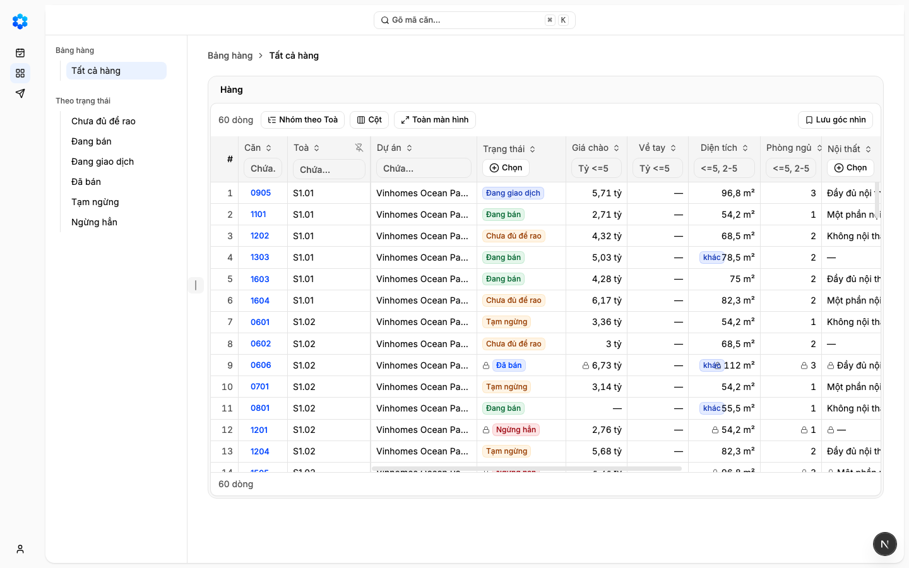
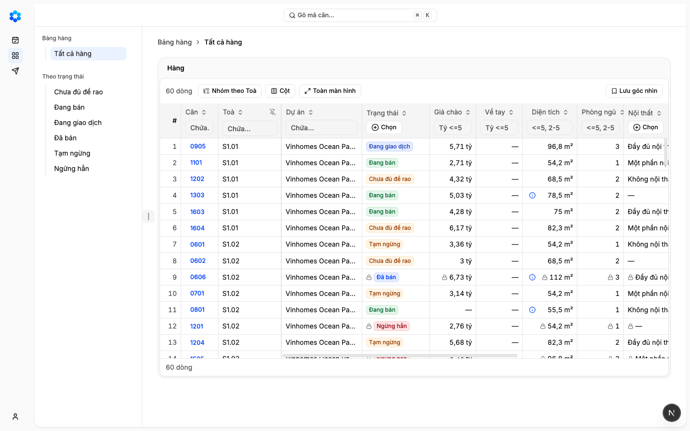
2 · Sửa trên lưới — lối A hai cột hay lối B năm cột
A (khuyên): Diện tích, Phòng ngủ sửa trên ô; Tầng, Hướng, Loại hình sửa trong chi tiết căn tới hàng «Bảng hàng đủ cột». B: thêm ba cột ngay sau Phòng ngủ.
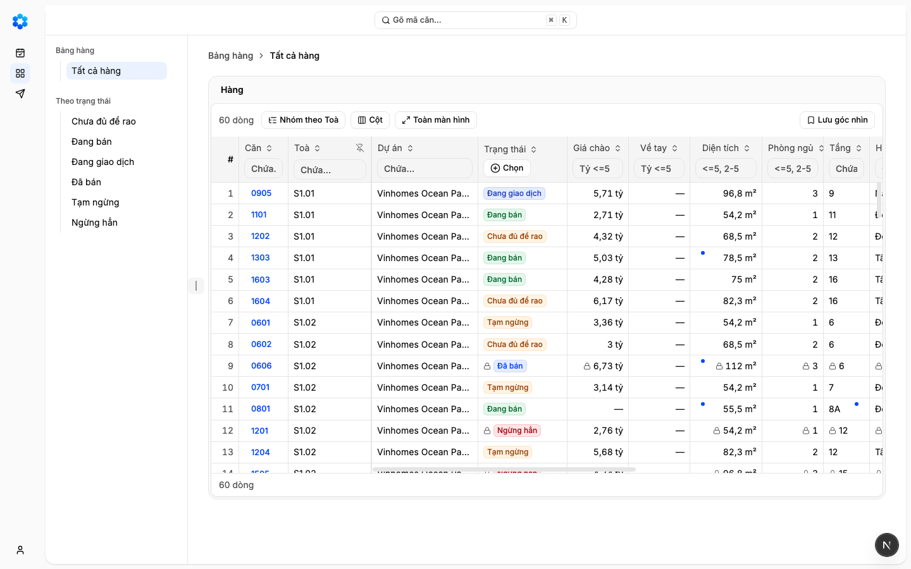
3 · Trên ô: mở dấu, sửa, câu lỗi
Bấm dấu: giá trị danh mục, nguồn, «Lấy lại danh mục». F2 mở ô; chữ không đọc được hiện câu lỗi dưới ô, không gửi gì.
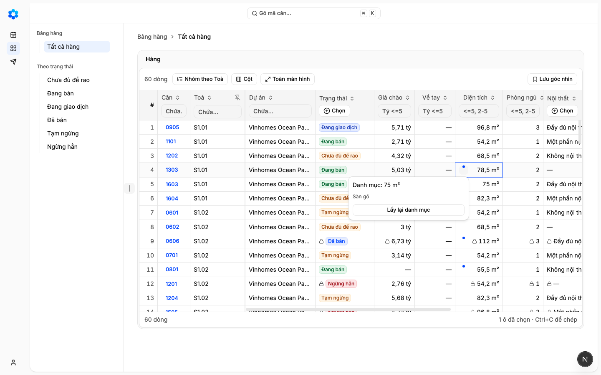
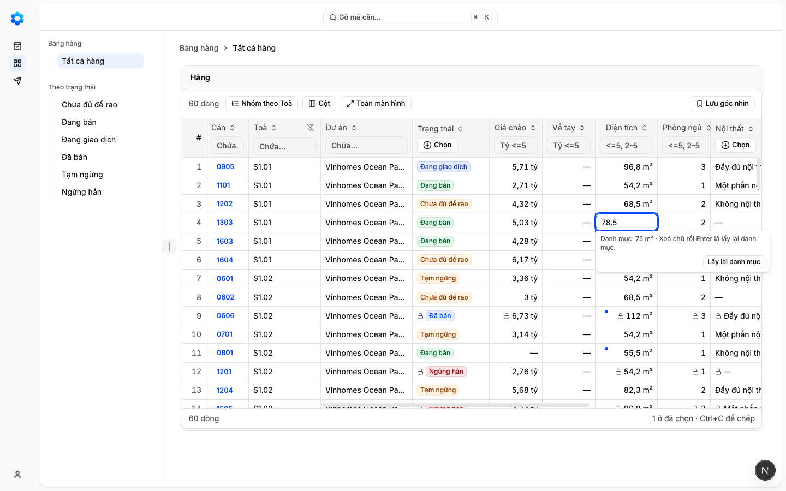
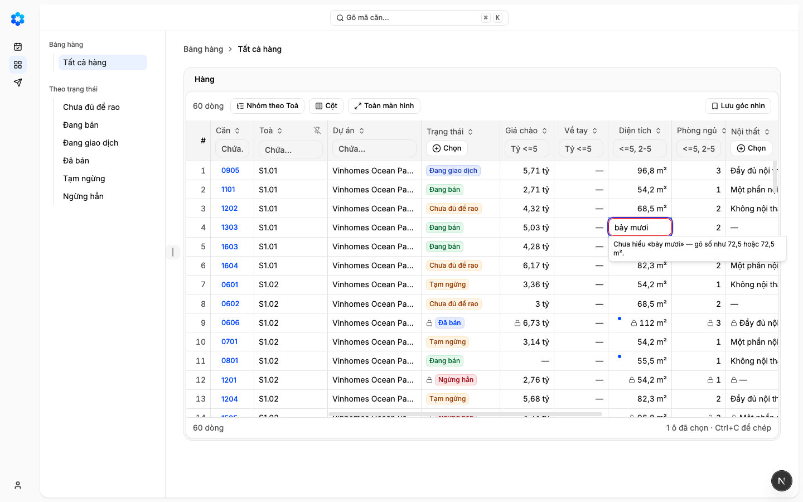
4 · Chi tiết căn — khối thông tin căn
Giá trị riêng có nguồn nhỏ «Sàn gõ» / «Nhập từ tệp» và dấu; «Sửa» mở hộp năm trường. Khung ngăn giữ như main.
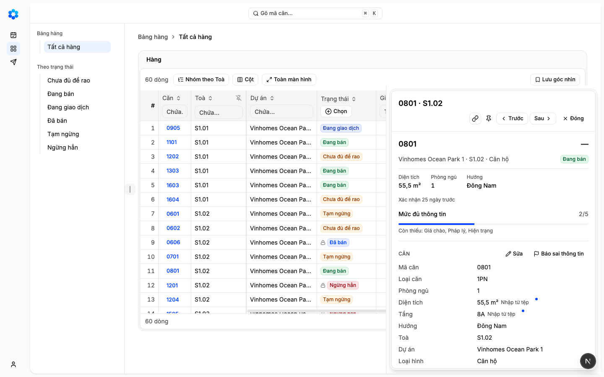
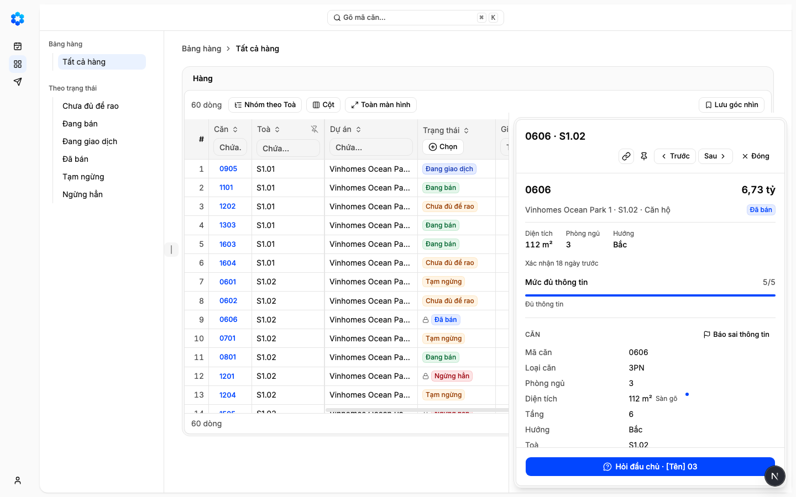
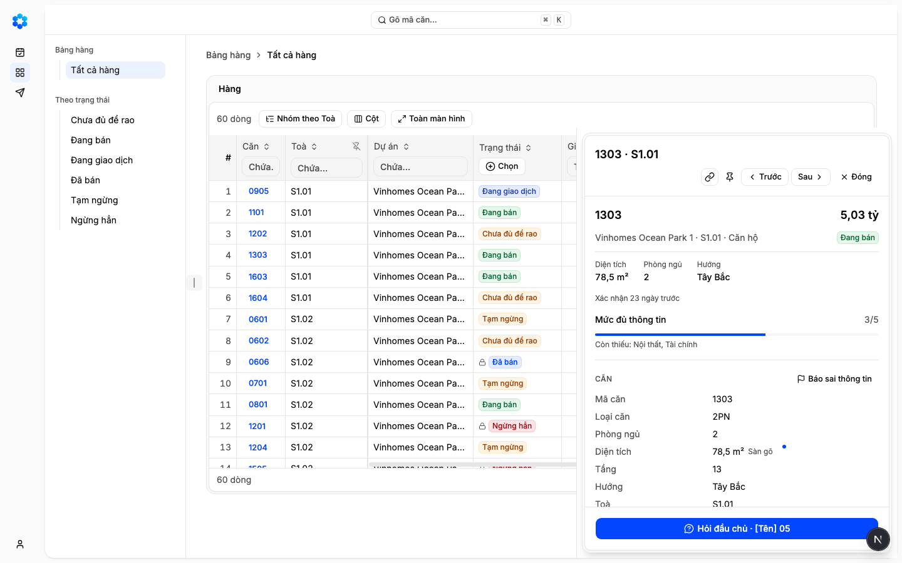
5 · Hộp sửa năm trường
Mỗi trường có dòng «Danh mục: …» khi khác; Hướng, Loại hình chọn, có mục «Theo danh mục».
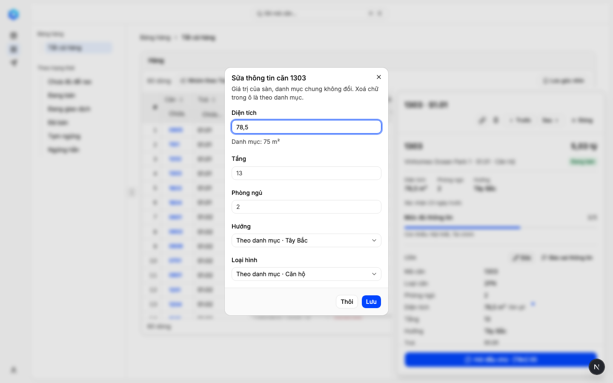
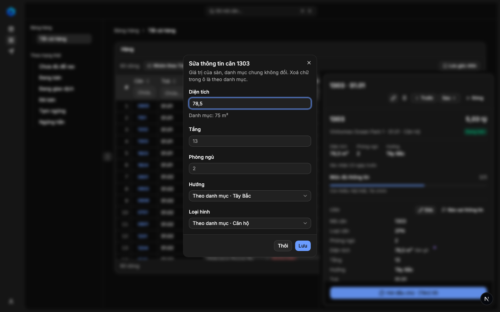
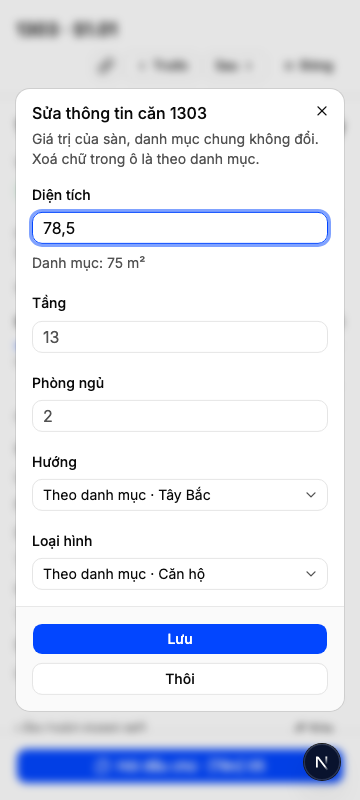
6 · Bốn khổ, sáng và tối
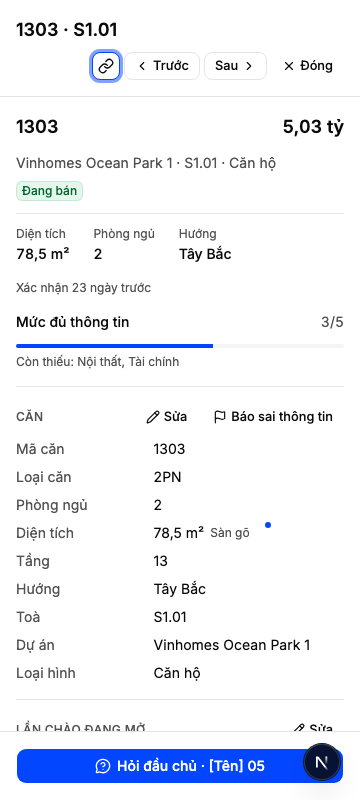
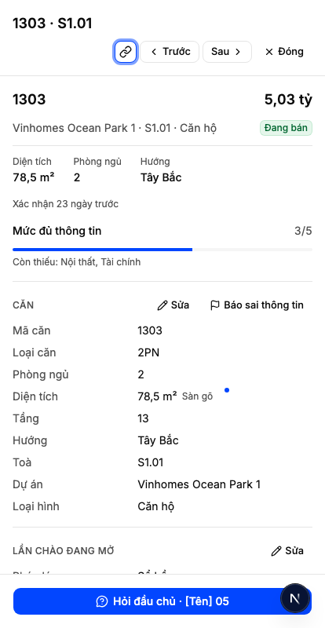
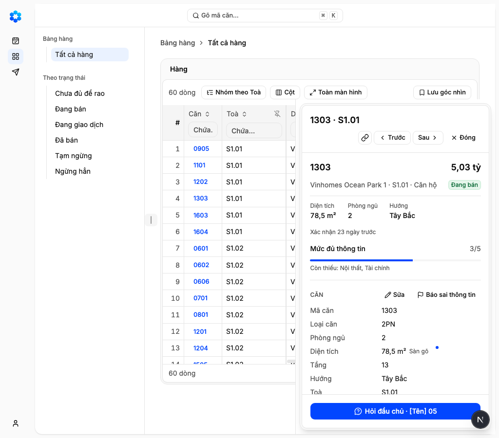
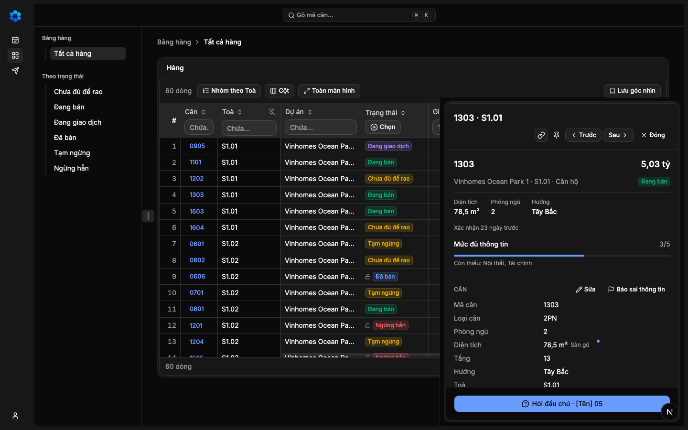
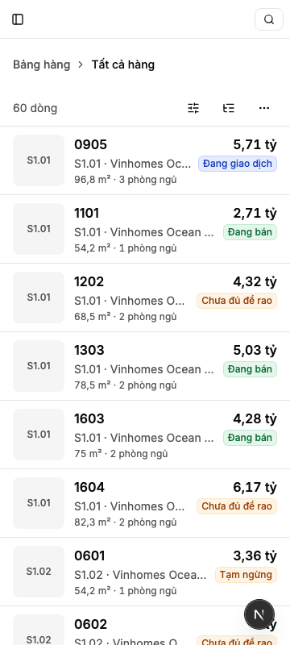
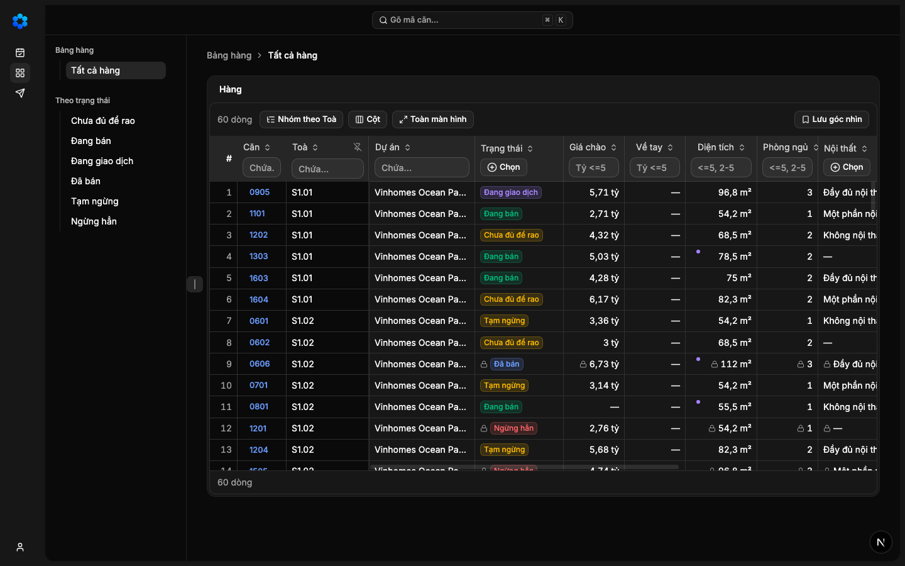